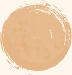
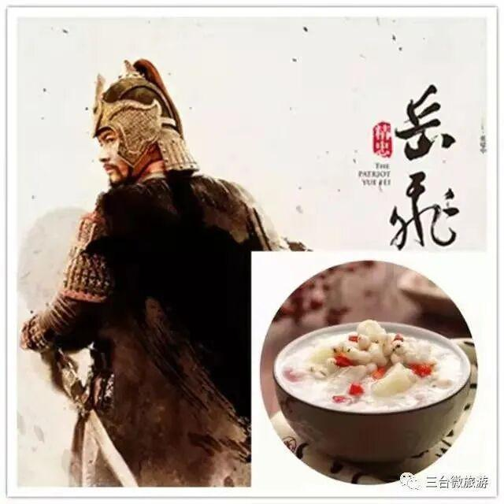
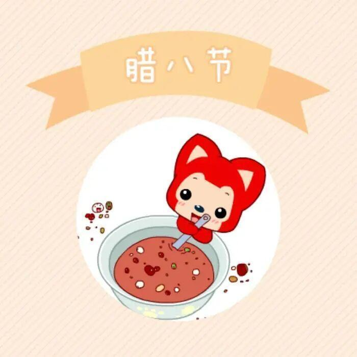

腊八节快乐
腊
八
快
乐

滑动查看更多

绝密
★
启用前
腊八知识小测试
（全国卷 腊八版）
考试规则：点击你认为正确的选项
1.选出你认为是腊八节的美食是？
A. 吃冰
回答正确 √
解析：腊八前一天，人们一般用钢盆舀水结 冰，等到了腊八节就脱盆冰并把冰敲成碎块。据说这天的冰很神奇吃了它在以后一年不会肚子疼。
B. 腊八面
回答正确 √
解析：据说，人吃了“腊八面”，福寿、康乐，平安；鸡吃了，爱下蛋；羊吃了，爱下 羔；牛吃了，一胎能生两个牛犊子……..因而庄稼 人特别敬重腊八节的“腊八面”。
C. 腊八豆腐
回答正确 √
解析：在安徽省黟地区，腊月初八家家户户 都要晒制豆腐，民间将这种晒制的豆腐称作
“腊八豆腐”。
D. 腊八蒜
回答正确 √
解析：其实，腊八蒜与“腊八算”谐音意为腊 月初八算账。一家人把一年的收支、盈亏 计算清楚，该还债的准备还债。
2
2
2
腊八节的前身都和以下谁无关———
A.岳飞
C.武则天
B.秦始皇
D.朱元璋
点击空白处查看答案
C
不知道大家上面的题答的怎么样
没答对也没关系，今天给大家介绍一下腊八节的故事！

腊八节的传说


01
赤豆打鬼


02
纪念修长城劳工


03
牢记祖先勤俭美


04
纪念岳飞


05
朱元璋挖“老鼠洞”
01
据说上古时期，有恶鬼专门作祟，小孩子生病、人们品行不端等都是因为恶鬼的原因。而这些恶鬼天不怕地不怕，单单畏惧赤（红）豆，所以人们在腊月初八这天熬粥，借粥里的红豆、赤小豆来打鬼，驱疫迎祥，这才有“赤豆打鬼”之说。
02
纪念修长城劳工
当年秦始皇下令修长城，民工们日夜赶工不能回家，管饱全靠家人送粮，难免有很多人家里隔山隔水，路途遥远，不少人饿死在长城工地。有一年腊月初八这天，民工们把自己残存的杂粮放在一起煮了一锅粥，每人一碗来抵御寒冷。后来为了纪念这些民工，人们每年煮腊八粥喝。
03
牢记祖先勤俭美
牢记祖先勤俭美
Keep in mind the beauty of diligence and thrift of our ancestors
西晋有个青年人，平日里游手好闲，好吃懒做，家里人几次相劝他都无动于衷，一直拖到了腊月初八那天，家里断炊了。小伙子搜刮完家里的米缸粮仓也就几捧杂粮而已，无奈之下他只好把这些杂在一起煮了一锅粥，从这之后他痛改前非，辛勤劳作。而当地人们便借此教育子女，每逢腊八煮粥喝，既表示不忘祖先勤俭之美德，又盼神灵带来丰衣足食的好年景。
04

纪念岳飞
In memory of Yue Fei
当年岳飞率将抗金于朱仙镇，正直严冬腊月，数九寒天，岳家军饱受饥寒交迫之苦，当地百姓端粥相赠，岳家军饱餐百姓的“千家粥”之后浑身暖和，体力恢复，大胜而归。这天恰是农历腊月初八，人们后来为了纪念岳飞及岳家军的英勇，每到腊月初八便以杂粮煮粥，渐成习俗。
05
朱元璋挖“老鼠洞“
朱元璋，“流浪鸡”、“珍珠翡翠白玉汤”、“凤阳豆腐”、“御香水晶锅”，中国很多民间美食似乎都与这位帝王有关，“腊八粥”跟朱元璋之间当然也有一段佳话为人们津津乐道。据说朱元璋当年落难在监狱受苦，那天正是腊月初八，饥寒交迫的朱元璋意外发现牢房墙角有个老鼠洞。饿的奄奄一息的朱元璋正准备捉老鼠充饥时，竟在老鼠洞挖出了一些大米、红豆等杂粮，于是把它们熬了一锅粥美美饱餐了一顿。
后来当了皇帝的朱元璋吃惯了山珍海味竟无比怀念当年那碗粥的美味，同时也为了纪念坐牢的艰苦日子，朱元璋就下令把腊月初八定为腊八节，把那天吃的杂粮粥命名为腊八粥。

通过这个推送是否对腊八节有了些新的认识？

点我一下

最后祝大家腊八节快乐
排版|杜岑
图片|网络